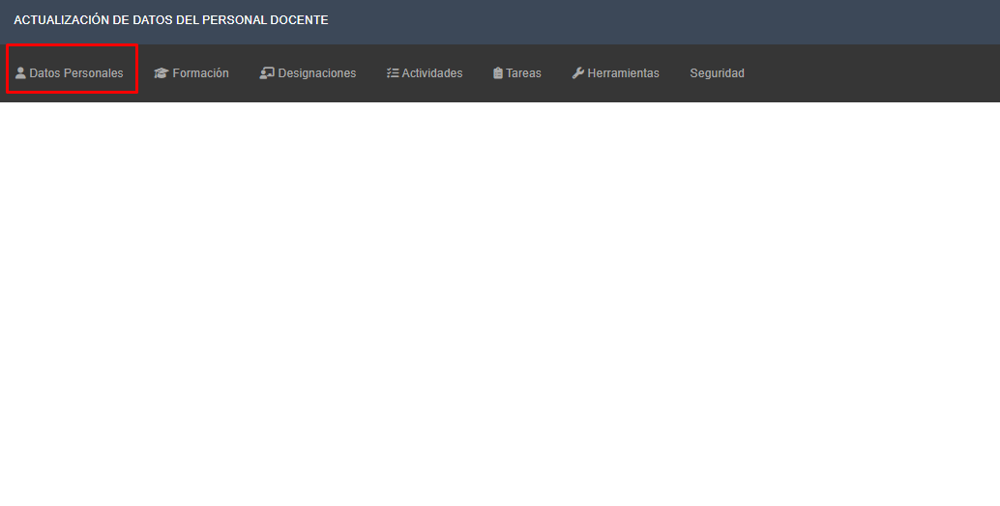

Instructivo carga de datos acreditación
Pasos para la modificacion y consulta de datos personales
Una vez que ingrese al sistema, verá en pantalla la siguiente interfaz. Ingrese al ítem “Datos Personales”
Revisar y controlar sus datos personales en cada pestaña: General, Curriculum Docente, Contacto y Contacto de Emergencia En caso de actualizar su información hacer clic en el botón Guardar